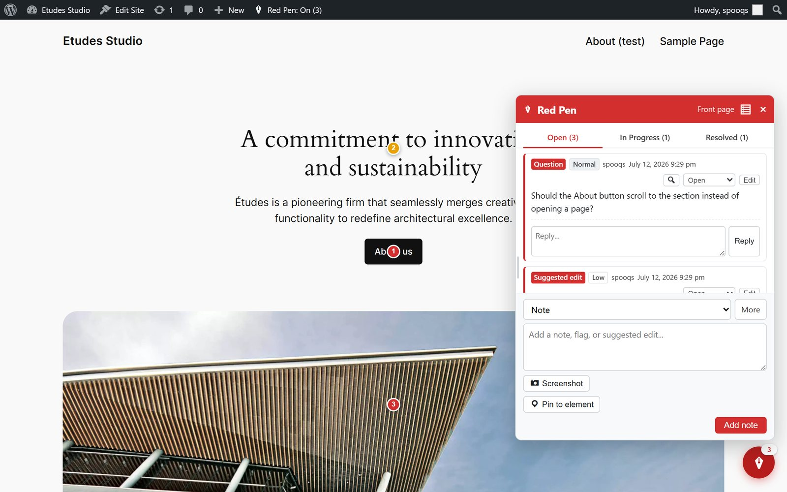
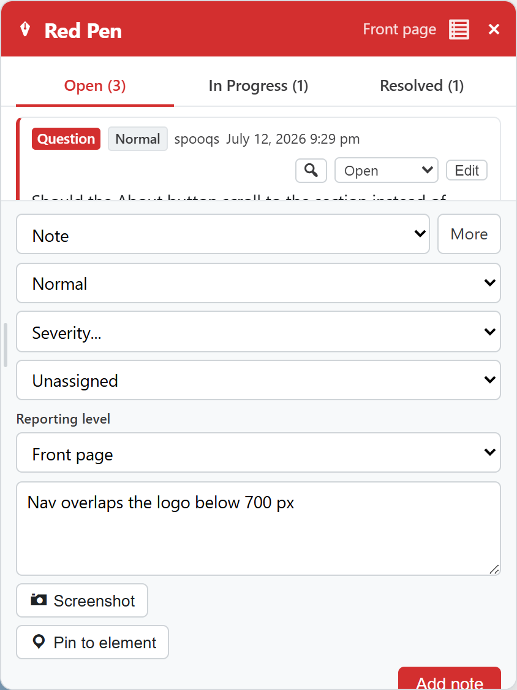
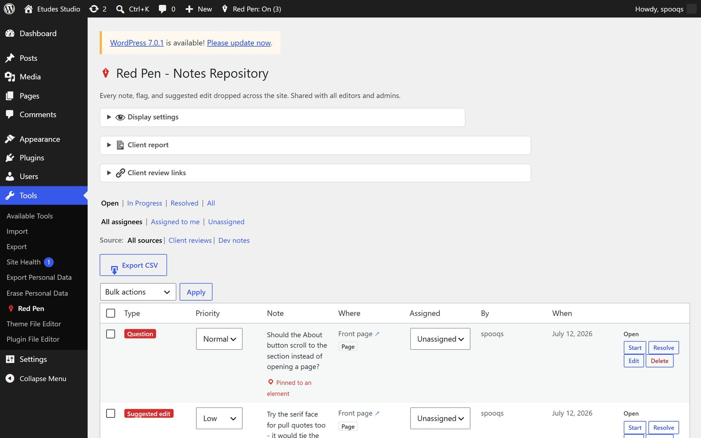
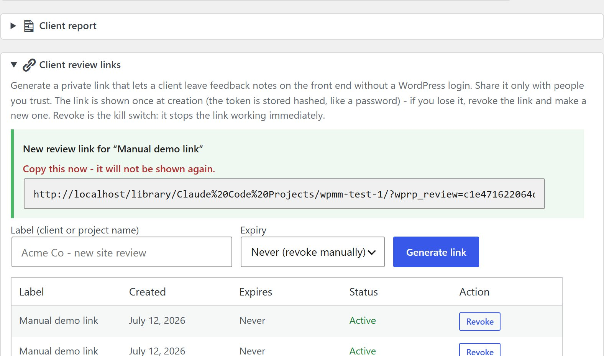
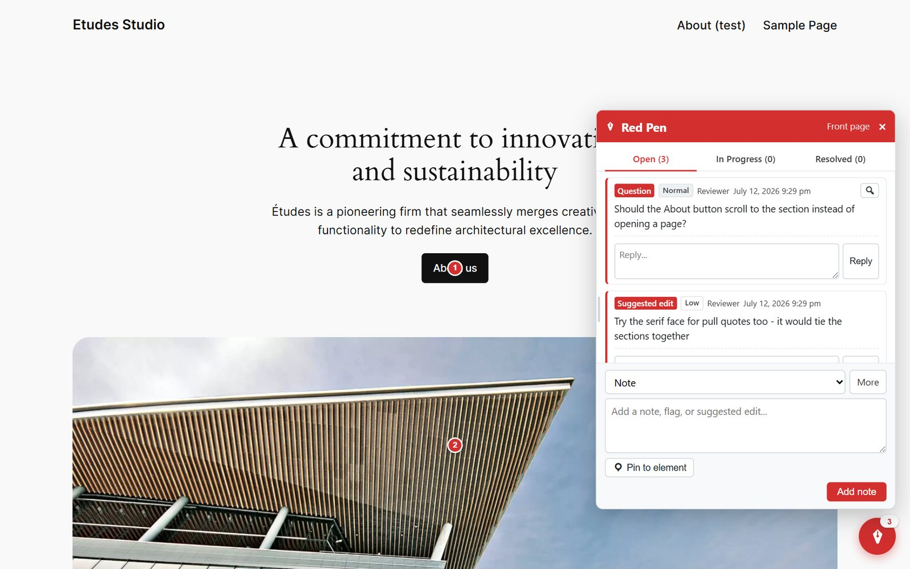
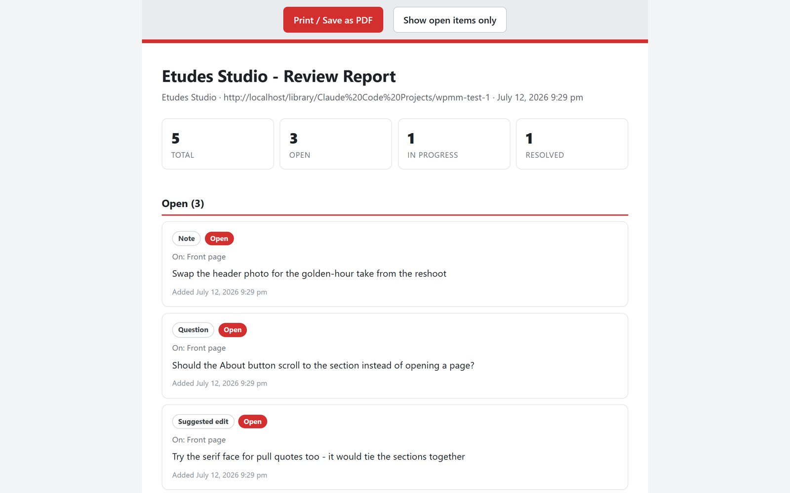

User manual - review notes pinned to the pages and elements of your WordPress site.
While you look at your site, you leave typed notes on the things they're about: "swap this header photo" pinned to the image, "should this button scroll instead?" pinned to the button. Notes live in a panel on the front end, show as numbered pins on the page, and collect in one repository in wp-admin. Clients can leave feedback through a private link with no WordPress login, and the whole pile prints to a clean report.
Everything stays in your WordPress database. No accounts, no external service, nothing leaves your site.
Plugins > Add New > Upload Plugin, choose the Red Pen zip, activate. That's it - one self-contained plugin file, no configuration required. You'll find the repository under Tools > Red Pen and a new entry in the admin bar.
Red Pen stays invisible until you switch it on. The admin bar gets a Red Pen: On/Off entry with the count of open notes - click it to toggle. Dev Mode is per-user: your editors see the overlay only when they've turned it on, and visitors never see anything.
With Dev Mode on, a red pen button sits in the corner of every page. Click it and the panel opens: pick a type (Note, Idea, Problem, Question - or your own custom types), write the note, add it. Pin to element lets you click the exact thing on the page the note is about - it becomes a numbered pin, labelled with the element's own visible text (or its alt, aria-label or title, or a plain-language name for the tag) so "Pinned to Book a call" tells you what you aimed at. Screenshot captures the page state alongside the note.
Pin mode works on a phone. The page scrolls normally while the picker is open; a deliberate tap places the pin and a drag is treated as a scroll. The picker also carries a visible Cancel control, for devices with no Esc key.

The More drawer holds the rest: priority, severity, an assignee (a teammate - or an AI agent queue, if enabled), the reporting level, which controls whether the note belongs to this page, this template, or the whole site, and the Visible to client reviewers checkbox - off by default, and covered under Client review links below.

Every note is Open, In Progress, or Resolved - the panel's three tabs. Each note carries a priority, an optional severity, and its own reply thread, so the back-and-forth about a note stays on the note.
Tools > Red Pen lists every note across the site: filter by status, assignee, or source (client reviews vs dev notes), change priority or assignment inline, resolve or delete, use bulk actions, or export the lot to CSV. The three panels above the list hold Display settings, the Client report, and Client review links.

Generate a private link and your client can leave notes on the live site with no WordPress login. The link is shown once at creation - the token is stored hashed, like a password - and Revoke kills it instantly. Links can expire on a schedule or live until revoked.

A link holder gets a deliberately narrow version of the panel: they can read the notes shared with them, write notes, pin, and reply - and nothing else. No resolving, no admin access, no screenshots, no user lists. The boundary is enforced on the server, and reviewer submissions are rate-limited.

Tick the box on the front-end panel's More drawer or in the repository's edit panel. A shared note carries a Client visible badge in the front-end list, on the edit screen and in the repository table, and a Client visible column in the CSV export, so you can always tell at a glance what a client can read.
Reviewers see their own reports at any status, with the date the report was marked fixed. Before, reviewer reads were pinned to open notes, so a client's Resolved tab could never fill and a report you had fixed looked identical to one that never saved. A one-time migration on upgrade restores the flag on notes the client themselves filed through a review link, so their own feedback stays visible to the link that filed it. Notes old enough to predate the token stamp keep exactly the visibility they had before - open-only - rather than gaining the new behaviour.
Reviewers never see agent-queue notes, site-wide notes, or notes on drafts, private or pending posts. Those constraints were there before and still are; the visibility tick is an extra gate on top of them, never a replacement.
One click in the repository turns the notes into a printable report - totals, then every note grouped by status, ready for "Print / Save as PDF". Internal fields (assignees, agent queues, browser context) stay out; the report is written for the client's eyes.

If you run several projects, the free Red Pen Hub collects their notes onto one local board. Connect this site from Display settings in the repository: paste the Hub's URL and connect token, and the site pushes its notes to your Hub - resolving on either side updates the other. The Hub, like Red Pen itself, is free. Ignore this section if you work one site at a time; nothing requires it.
Notes are a private post type inside your own WordPress database, invisible to the front end and to search engines. Screenshots go to your uploads folder. Deactivating the plugin hides the overlay; your notes stay in the database until you delete them.
| Symptom | Likely cause and fix |
|---|---|
| No Red Pen entry in the admin bar | Your user can't edit posts (Red Pen shows for editors and up), or the plugin isn't active on this site. |
| Overlay missing on a page | Dev Mode is off (check the admin-bar toggle), or that view is excluded under Display settings. |
| A pin doesn't show | The element it was pinned to no longer exists on the page - the note itself is still in the panel and repository. |
| Client says the review link doesn't work | The link was revoked or expired, or it was mistyped - the full token is part of the URL. Generate a fresh one. |